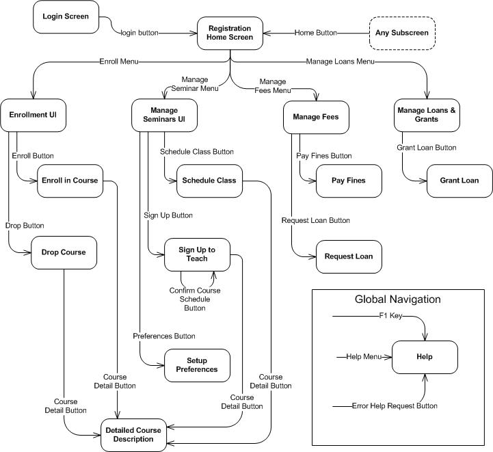
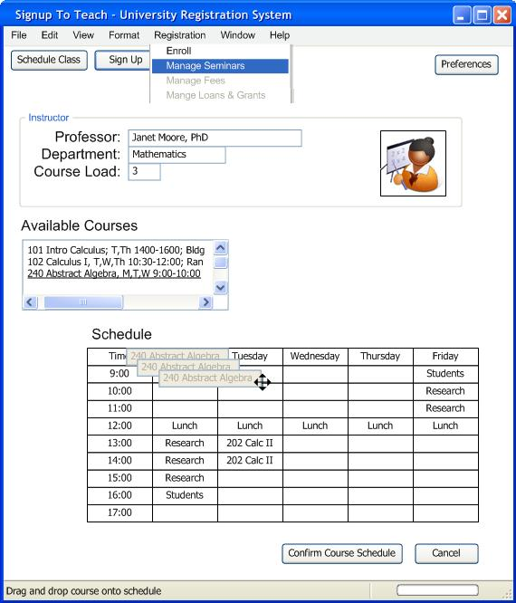

OUM |
Task Overview |
||
Method Navigation |
Current Page Navigation |
||
|
|
||||||||
The purpose of this task is to transform the storyboards and wireframes in the User Interface Analysis (AN.090) and specify how they will be implemented. You also specify the navigation sequences between each of the interfaces in the storyboard(s).
This task is executed for each component that is defined in the Module View of the Architecture Description. However, it is important to weave together a cohesive user interface to support the functionality defined in the use case package, as a whole.
This task is executed in parallel with the following tasks:
C.ACT.DC Design - Construction
User Interface Design
The work product consists of a navigation map, and a series of detailed interface specifications.
You should follow these steps:
No. |
Task Step | Component | Component Description |
|---|---|---|---|
1 |
Define major interfaces. | None | Use the Use Case Specification, Storyboard, and Boundary Classes to group the necessary data and behavior of the interfaces into major windows, web pages, or other user interface mechanism. |
2 |
Define interface navigation. | Navigation Diagram | The Navigation Diagram shows the structure and allowable flow through the major user interface elements from step one. |
3 |
Design interface. | Prototypes Interface Specifications |
The creation of prototypes, screen shots, or filled-out wireframes is where you capture the details of the user interface design down to the widget level. |
4 |
Design reports. | Report Prototypes Report Specifications |
The creation of report prototypes, report layouts, or a report specification definition table may be used to capture the report design to a detailed level. |
5 |
Define interface features. | Interface Specifications | The Interface Specification describes other elements of the interface design (help, undo, window management, etc.) not captured in the preceding steps. |
The system will be comprised of a small group of important user interface windows and a number of secondary windows, panels, or screens. If your system is to be web based, then you will have major web pages and minor web pages.
For interface design begin by defining the major windows. These should be in line with the use cases that were defined during the requirements definition and analysis phases as well as the storyboards defined in the User Interface Analysis (AN.090). Each storyboard consists of a sequence of wireframes. Categorize the wireframes as essential to the main success of the story or a supporting element of the story. Essential wireframes are always seen by the actor. Supporting elements may or may not come up during the story.
Combine essential wireframes together into one window if they contain some of the same information. Combine essential wireframes together that serve similar purposes. These combined wireframes form the basis for your major windows. Name these major windows and adjust the wireframes to accommodate any combinations of wireframes that have occurred.
Another way of finding major windows is to look at the Boundary classes defined as part the use case realization process. The Boundary classes represent a stand-in for the user interface for the purpose of defining behavioral interactions among objects with will realize the scenarios of a use case. What information do these Boundary classes display? What requests do they handle? Compare what you have found in the Boundary classes with the wireframes you have from the storyboards. Use this comparison to come up with major windows that “realize” the Boundary classes and the wireframes in the storyboards.
In this step you describe the sequencing or navigation paths through the major windows of your interface design. This navigation ties all the different storyboards together. It also provides a view into the realization of use cases with interface sequencing. The navigation must show all the major windows and the paths to get from one window to other windows. Each path of the navigation is labeled with the user interface element (such as a button, link, or menu item) that causes the system to transition from one window to another.
Sometimes you have windows that can be reached at any time from just about any other window. In that case call them out as global windows. Show the paths to these windows without connecting them up to all the other windows when describing interface navigation.
Once you have the interface navigation together, review it for completeness. Do the paths through the navigation cover all the use cases? Can the user navigate from the general to the specific and back again? Will the user get lost in a sea of windows?
The follow diagram is an example of interface navigation for part of the University Registration System:

At this point, each major window has to be designed in detail. To do that, you take the wireframe for each window and replace the high level interface elements with technology specific elements / window widgets such as text fields, combo boxes, radio buttons, text labels, visual grouping techniques, etc. When laying out each window keep the following in mind:
The tips in the list above are just a few of the many things to consider when designing a user interface.
Once you have a representative prototype show it to the user stakeholders and get their feedback. Make changes and then show it to them again. The following is a simple window for part of the “Sign Up to Teach” use case.

All of the formatting for the required reports needs to designed in detail. To do that you will take the wireframe, prototype, or other set of functional requirements for each report and replace the high level elements with technology specific elements and report specific information such as text fields, headings, columns, labels, and other output formatting specifications.
Once the major elements of the user interface are done, you can focus on other features such as search, undo, browsing, window defaults, preferences, and help.
Remember, each one of these features adds overhead to the design and programming effort. Work with the project manager and other Design team members to weigh the balance between adding these features, performance, cost, and schedule.
This task has supplemental guidance that should be considered if you are doing a Siebel CRM implementation. Use the following to access the task-specific supplemental guidance. To access all Siebel CRM supplemental information, use the OUM Siebel CRM Supplemental Guide.
This task has supplemental guidance that should be considered if you are doing a Webcenter implementation. Use the following to access the task-specific supplemental guidance. To access all WebCenter supplemental information, use the OUM WebCenter Supplemental Guide.
This task involves the following method roles:
Role |
Responsibility |
% |
|---|---|---|
Designer |
Define major interfaces, navigation paths and widget details for each storyboard. You may want to use a designer who specializes in interface design. | 100 |
Ambassador User |
Provide feedback on the user interface prototypes. | * |
* Participation level not estimated.
You need the following for this task:
Prerequisite |
Usage |
|---|---|
Reviewed Analysis Model (AN.110) |
The Analysis Model, especially the User Interface Analysis (AN.090), is used as input for developing the design of the user interface to support the functionality described by the use-case package. The Analysis Model is comprised of all of the Analysis work products. The analysis classes and packages that are part of the Analysis Model are used as a basis to identify components, subsystems, and layers. The Analysis Model represents a collection of all Analysis work products, as available, resulting from the following tasks:
|
User Interface Standards Prototype (IM.095) |
The standards established in the User Interface Standards Prototype must be considered when designing the user interface. |
The following templates and tools are available to assist with this task:
There are currently no templates available to assist with this task.
Tool |
Comments |
|---|---|
| JDeveloper |
The User Interface Design is used in the following ways:
Distribute the User Interface Design as follows:
Use the following criteria to check the quality of this work product:

Copyright © 2006, 2016, Oracle and/or its affiliates. All rights reserved.